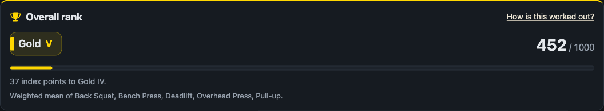
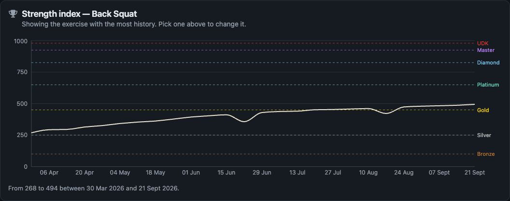
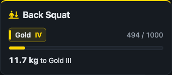

A local web app that turns a gym logbook into a strength rank calibrated to your sex,
bodyweight and age, using the formulas competitive powerlifting actually uses.
7exercises tracked
40ranks and divisions
177automated tests
0network calls at runtime

The overall rank, weighted across five lifts.

Six months against the rank thresholds.

Per exercise: the exact kilograms still needed.
Key features
Calibrated to your body. DOTS bodyweight normalisation and the
Foster and McCulloch age tables, so one pull-up is not one number for everybody.
Absolute, never competitive. Thresholds are fixed in configuration,
so a rank never depends on another user. No leaderboard anywhere.
The next division, in kilograms — not just a badge and a bar.
Full CRUD with server-side validation, and a guard that holds an
implausible jump out of the rank until a second set confirms it.
Progress charts with rank thresholds behind the curve.
Friends see ranks, never bodies. Bodyweight, loads, notes and date
of birth never leave the owner’s account.
IronBronzeSilverGoldPlatinumDiamondMasterUnkillable Demon Kingeach split into five divisions, V to I
Architecture
Browser Express 5 API (one Node process) Data
┌────────────────┐ ┌──────────────────────────────────────────┐ ┌──────────────┐
│ React 18 SPA │ fetch /api/* │ routes/ auth · me · performances │ │ gymrank.db │
│ Vite · router │ ─────────────►│ ranks · stats · friends │ │ │
│ recharts │ JSON only │ middleware/ requireAuth · validate │ │ WAL journal │
│ │ │ jsonOnly · errorHandler │──►│ foreign │
│ 9 routes │ ◄─────────────│ services/ performances · ranks │ │ keys on │
│ │ session │ stats · explain · friends │ │ │
│ │ cookie: │ lib/ scoring.js ← pure, no database │ │ one file │
│ │ HttpOnly │ db.js · password.js · session.js │ │ beside the │
└────────────────┘ SameSite=Lax └──────────────────────────────────────────┘ └──── code ────┘
built by Vite, served by Express in production node:sqlite, built into Node 24
How a set becomes a rank
bar load + bodyweight factor
↓
estimated 1RM Epley and Brzycki,
averaged
↓
DOTS points ÷ P(bodyweight),
4th-degree fit
↓
age coefficient Foster 14-23
McCulloch 40+
↓
strength index 0-1000, between
published standards
↓
rank + division Iron V … UDK I
90 kg man, bench 100 kg × 5 → 1RM 114.6 kg → 74.1 DOTS
→ index 459 → Gold V, 7 kg short of Gold IV.
Tools and platform
Assistant Claude Code (Anthropic)
Runtime Node.js 24
API Express 5, JSON only
Databasenode:sqlite, built in — nothing to compile
Frontend React 18, Vite, react-router, recharts
Styling Font Awesome inline SVG; plain CSS, no framework
Testsnode --test, built in
Runs on a laptop — macOS, Windows or Linux
Installnpm run setup
Startnpm run build && npm start → localhost:3000
Network none: no cloud, no CDN, no container
Offline verified — every asset is same-origin
Data one SQLite file beside the code
Lifespan Phase 1 only — the code is discarded after